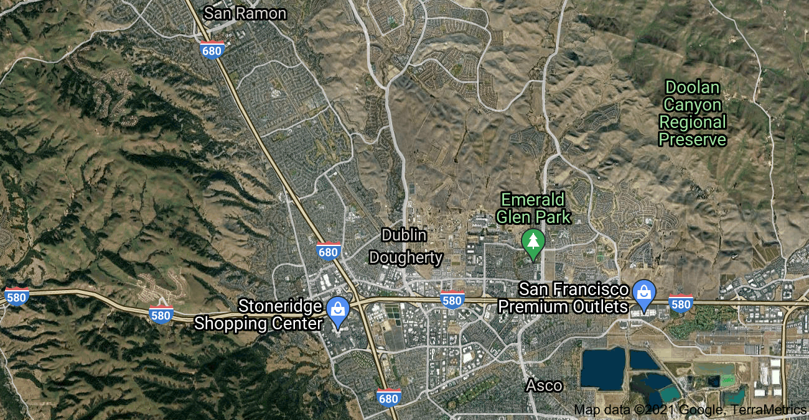

Zipcode:
Past
Present
Future
*Instead of a button, there will be a slider that you can drag to any time you want, which will come in a later update.

Timeline
Over here it would have the analysis on each area, such as different threats to the area and etc.